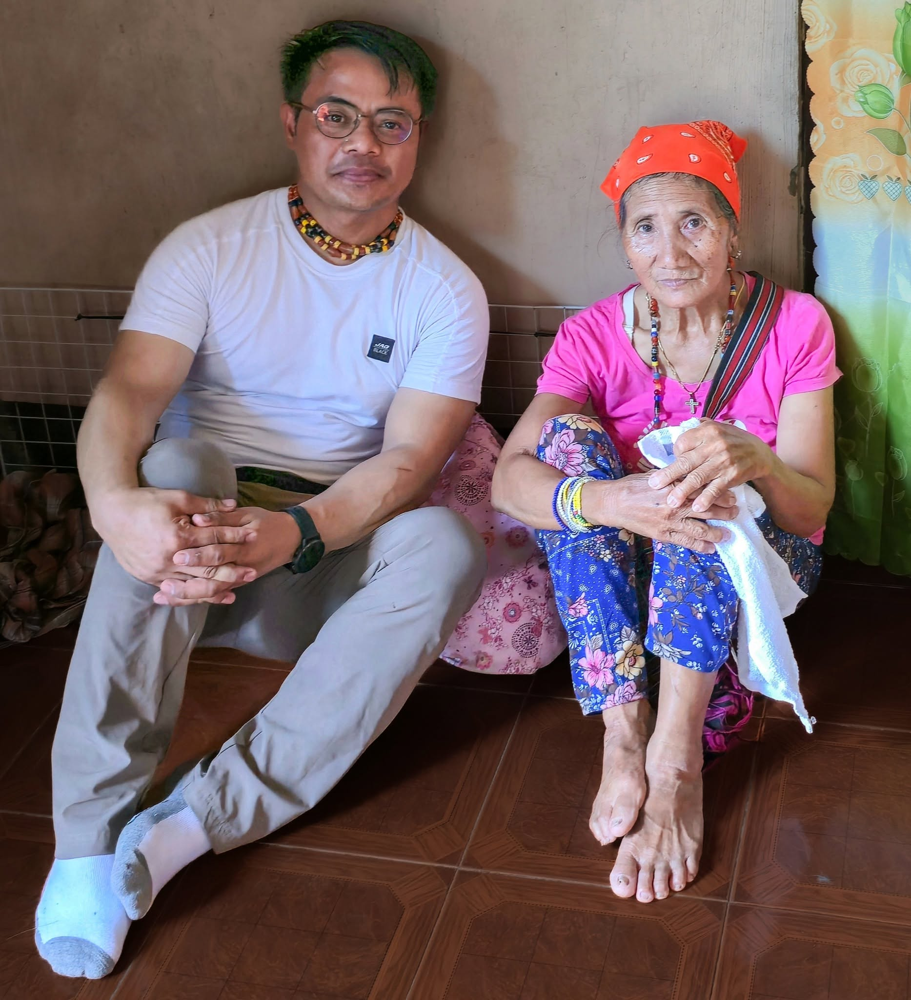
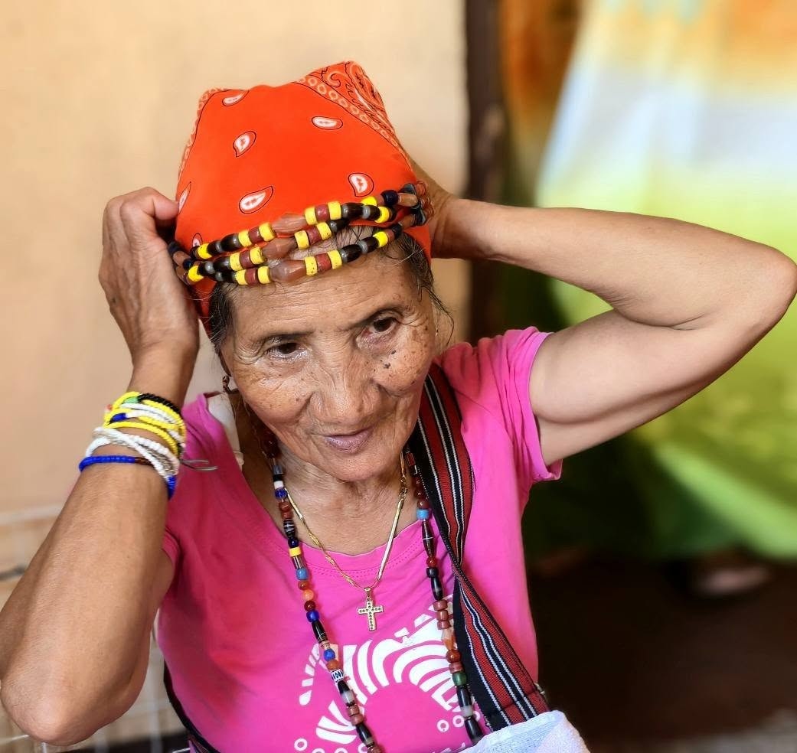
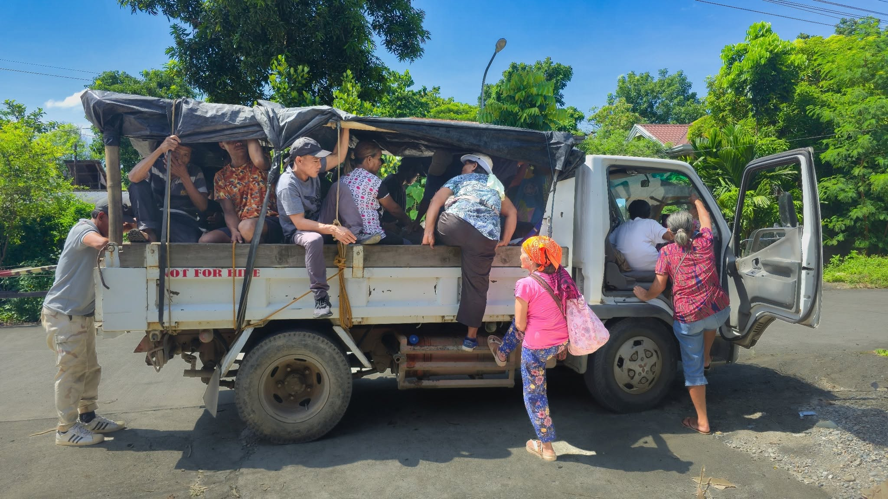
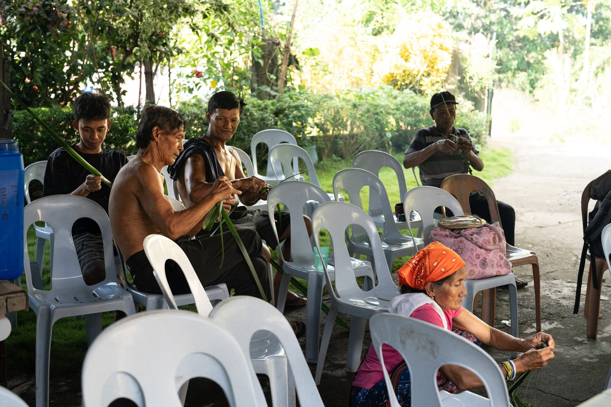
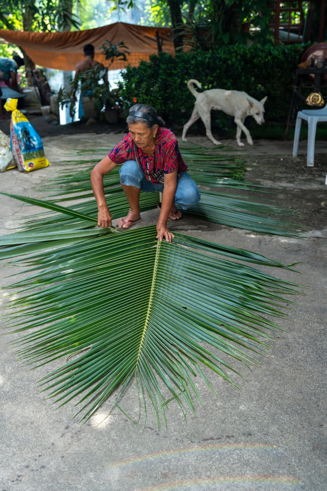
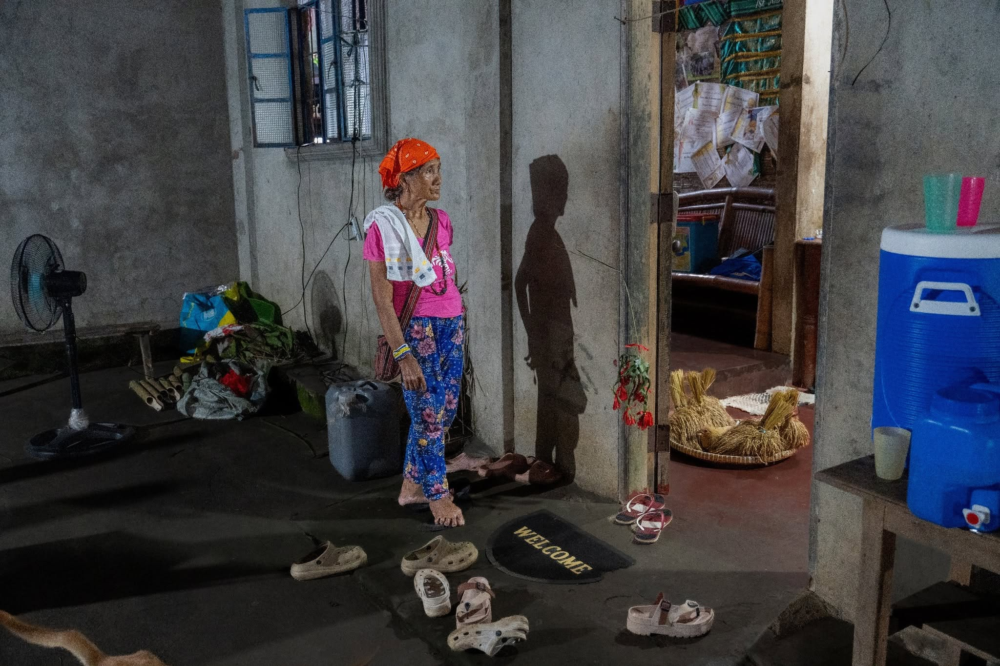
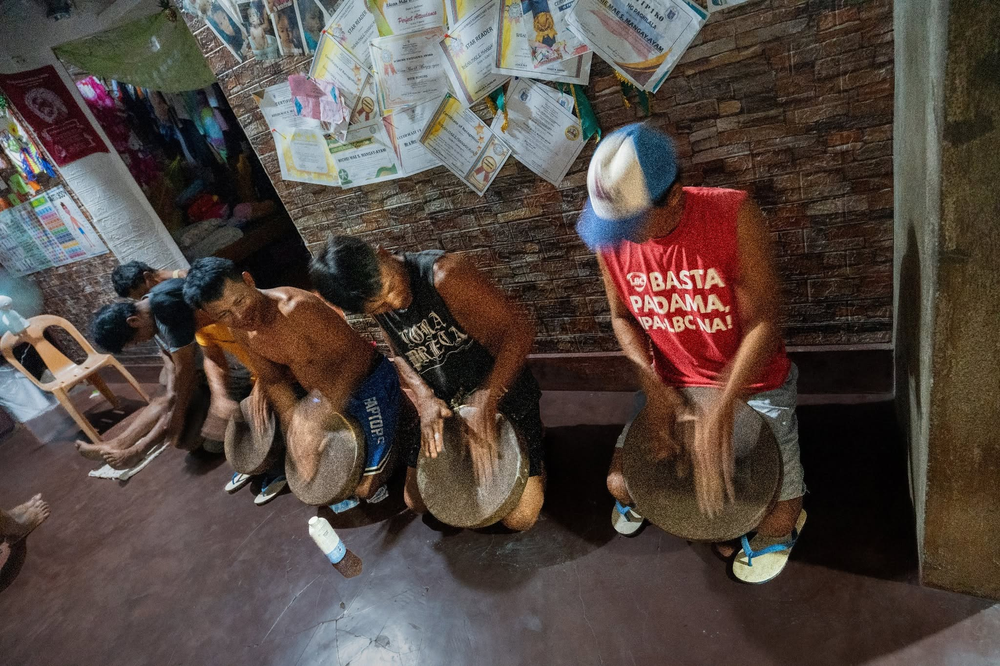
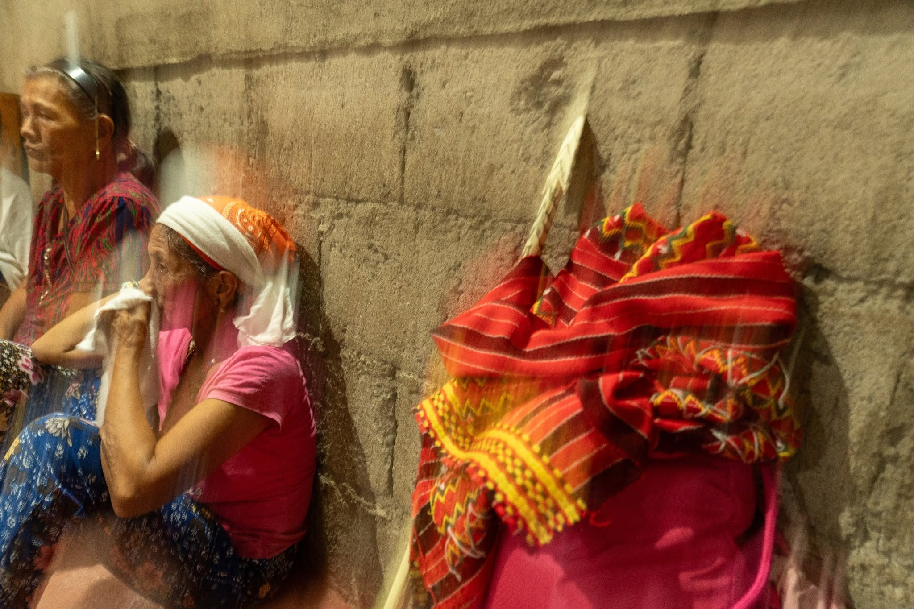
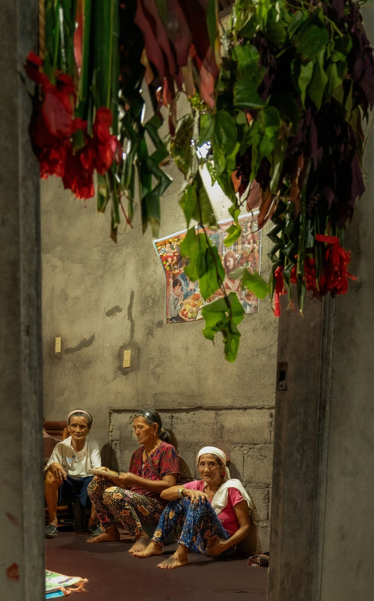
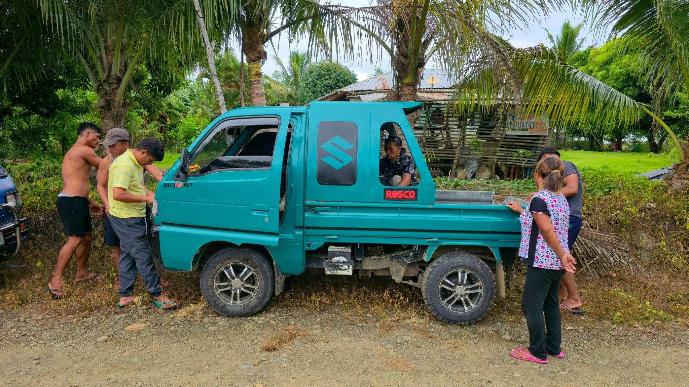

Reflections on a Day's Journey with a Manjajawak 'Indigenous Ritualist'
by Scott Magkachi "Tuvyan" Saboy
Event: Jawak 'Indigenous healing ritual'
Location: Aurora, Quezon, Isabela
Date & Time: 08-09 August 2025 (2000-0130H, 0530-0800H)
Traditional Healer: Aida Amoga
Ritualist's Assistant: Patricia Gunnawa


There is so much to write about this learning event, from the time we arrived at our destination and the complex four-hour preparation to the eight-hour healing ritual, but let me for now share seven of my overlapping reflections on this enlightening experience.
1. Our Indigenous healing tradition is a community affair. From the get go, it was clear that the patient didn't have go through the healing process alone. There were 23 of us who trooped to the area with most of us sitting astride two benches on the truck's flatbed over which a makeshift cover of black plastic is held in place by bamboo poles, abaca ropes and strips of interior tire rubber. It was a preview to a series of activities that showcased communitism: residents and visitors helping the manjajawak and her assistant fashion materials for the conduct of rituals, women and men preparing and serving food, men testing their endurance playing patangguk and tongngatong (percussion bamboo instruments) for hours while the manjajawak conducted the ritual, and family members huddling with the patient on the floor at multiple stages of the healing ceremony.

2. The manjajawak is special, but does not get a special treatment. I was a bit taken aback when we got to the white Elf truck that would take us to Aurora because almost everyone was on board except the manjajawak, me and two others. I had thought she would at least get the front seat, but no. She had to climb onto the truck like everyone else, and endure with us the hour-long journey with the sun glaring at us and the improvised car top flapping with the wind and hammering our heads throughout the journey. At one point I was afraid she would doze off and fall off the side of the truck. It was only when we went home the next day in a green multicab that she got to ride shotgun, and even for that we had to persuade her to not join us at the back. There was no special seat for her in the house nor at the dining table in the yard either. Everyone knew she had a gift none of us had, but none felt like she was not one of us.


3. The manjajawak has an appearance of frailty , but she is in reality a force to be reckoned with. A slim figure of a little less than five feet and walking with a limp, she doesn't seem physically strong. But throughout the entire duration of the ritual with her multiple times dancing around the family members sitting on the floor in the middle of the living room and around the rest of the house, she was in her element, showing no sign of exhaustion or physical infirmity although she was drenched in sweat the whole time. The physical and mental intensity was palpable as she swirled around and chanted in a high-pitched voice a series of poetic jimjimi 'prayers', but the whole thing didn't seem to totally wear her down.

During the two trance-like segments of her performance, three women had to restrain her as she tried to grab hold of a plate of inanjila 'tongue-shaped glutinous rice cakes' and two strong young men at the door struggled to keep her off their backs while she attempted to snatch away the black cloth the two men held down on top of the black pig hogtied at the foot of the door. I was just doing the video and photo recording and I was already fagged out! Several times she told me I should go to sleep but partly out of pride and of my desire to learn more, I persisted, only taking a couple of naps in the chair for a few minutes during short breaks between each stage of the ritual.



We eventually slept at around 2:00 am. When I awoke at 5.30, she was already outside sipping her coffee in a plastic cup, smiling and asking me if I slept well. Then she went on to cap the whole process with a two-hour cleansing ceremony.

4. Jawak is a testament to the resilience of our Indigenous traditions, and the manjajawak is a symbol of resistance to hegemonic narratives. Aida Amoga told me she cannot pass on her gift to someone else even if she wanted to; one eventually gets it if s/he is meant to. As a case in point, her grandmother Tagallap was a manjajawak but her mother did not receive the gift.
One reason I had chucked my to-do list right away days ago just to get to her place was the idea I gathered from relatives that she is the only remaining manjajawak in our municipality. I feared that if I didn't see her then, I might not see her again during my next annual vacation and an entire library of Indigenous knowledge, beliefs and practices would have died with her.
But in my conversations with her, I sensed that she didn't seem worried about the work of the manjajawak ending with her for she said quite matter-of-factly that another in her family or clan will somehow rise to take her place. Perhaps, despite the systematic attempt of Fundamentalist Christians to rid us of what they perceive as the "evil work" of the manjajawak, the Indigenous ritualist will live on as long as the rest of us in the community continue to create a space for her/him in our collective consciousness and lived experience.
The manjajawak reminds us of the uniqueness of our ethnic identities and the richness of our Indigenous traditions. While religious exclusivists brand her as the villain in their narratives, we must in our counter-narratives present her as a heroine, a champion of our right to be respected for who we are.
5. Laughing at what we don't understand can reflect our arrogance matched only by our ignorance. My first post about Aida Amoga generated some derisive comments from those who believe they are too civilized or enlightened to ever believe in these primitive rites, who think only they know the truth, and only they are saved from damnation.
But isn't it the height of human hubris for some to think that only they have a direct link to and the capacity to understand or interpret a/the Divine Mind? Isn't it a bit arrogant for some to think that just because they were washed by the waters of their new faith, they could just casually dismiss the fact that they first bathed in Indigenous waters? Isn't it a display of ignorance to assume that one's theology or worldview came out of a celestial vacuum, that it did not grow out of the fertile soil of culture, politics and history? And isn't it true that what appears to one as a perfectly sane set of religious beliefs and practices may appear ridiculous or laughable to another?
6. Different doesn't necessarily mean bad, and strange doesn't necessarily mean evil. Colonial prejudice, contending Christian theologies, and childhood conditioning have taught us to love a foreign culture and other peoples' beliefs and practices while generally hating our "privimitive" and "pagan" knowledge systems and practices.
This is not to say that nothing good came out of Christian missions to our Indigenous lands for along with the evils they brought in, they also ushered in the blessings of education, modern technology and the psycho-social benefits of a new faith. Nor do we naively believe that everything about traditional culture is good (that is why we got rid of kayaw 'head-taking raids', tell our people not to literally paint every inch of the village red with their moma 'betel chew' spit, etc.).
In this case, however, I see nothing wrong with the work of the manjajawak. In fact, I strongly believe it should be promoted some more among our traditional communities not as a substitute to but a complement of modern medical interventions and Christian healing practices. If what she does is superstitious, so are Christian practices like the so-called Charismatic healings, Evangelical prayer vigils, or Catholic blessings using holy water.
7. Lack of self-reflexivity leads to preachifying against Indigenous beliefs and practices. Some relatives and friends, perhaps fearful that I have totally lost my way, had sent me Bible verses right after my first post about her. I think I understand quite well their religious zeal for after all, I grew up in a Fundamentalist sect, briefly became a lay preacher for a similar church, and later served as a preacher for 10 years at yet another conservative denomination.
If there is one great lesson I learned from doing (Biblical) hermeneutics in my Fundamentalist past, it's the fact that you can use Bible verses to mean anything you want. This partly explains why we have about 47,300 Christian denominations worldwide distributed among the following traditions: : Roman Catholics, Orthodox, Anglicans, Protestants, Independents, and Marginals. (See Polycentric Christianity and Gordon Conwell's Denominational Chart)
Those who use Bible verses to condemn the work of the manjajawak as Satanic or demonic first need to study how multiple ancient writers and editors of the Hebrew scriptures drew and recast concepts and narratives from Syro-Palestinian, Mesopotamian, and Persian cultures. In this way, they will come to understand how the ancient Hebrews/Israelites invented a supposedly divinely-stamped national myth and 613 religious laws which we eventually were conditioned to swallow hook, like and sinker to such an extent that we had become honestly convinced that what they practiced and believed were truly of God and what they condemned were truly of the Evil One. (Recommended initial readings: Ancient Near Eastern Thought and the Old Testament by John W. Walton; Who Wrote the Bible by Richard Elliott Friedman; & The Bible Unearthed: Archaeology's New Vision of Ancient Israel and the Origin of Its Sacred Texts by Israel Finkelstein).
Concluding Note
Attending the jawak was not for me primarily about whether I believe in the supernatural or not, but about suspending judgment, being open to correction, and learning more about my roots. As an Indigenous scholar, I have become all the more aware of how little I know about our people's lifeways and so I am greatly honored to have begun a new level of education at the feet of a cultural master like her. It has become more meaningful for me to once again say:
When the academic rubber
meets the the Indigenous road,
the ride becomes a rite of passage:
the scholar gets schooled,
the lettered learns to read,
and the learned unlearns.